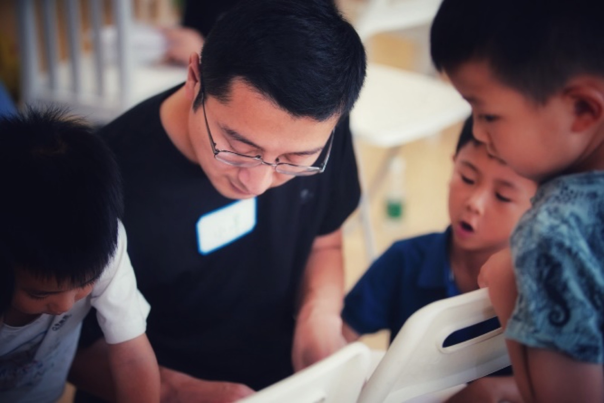

慕识小社区，阅读大世界
「让孩子变智慧的方法，是阅读、阅读、再阅读。」
— 瓦·阿·苏霍姆林斯基
慕识是一座“不被轻易定义”的空间：它是图书馆，是书店，是阅读工坊，也是活动中心。 它出现在孩子课后与假期里的每一天，也出现在社区的文化生活里。
自 2019 年江湾城儿童阅读中心落成以来，慕识主办了 20 余场主题书展、 30 余场公益讲座、50 余场公益阅读会，超万人参加。


两万余册英文原版图书，涵盖自然科学、生命科学、社会科学、人文与艺术四大领域。
四大阅读领域
自然科学
从天气、动植物到宇宙与生态，用实景图片与真实案例建立“观察—关联—推导”的思维习惯。
生命科学
身体、健康、情绪与成长，让孩子在阅读中理解自己，也理解他人与世界的关系。
社会科学
地理、历史、城市与规则，用阅读建立全球视野，也让孩子的表达有理有据。
人文与艺术
故事、诗歌、音乐与绘画，培养语感与审美，也保护孩子对文字的长期热爱。
依据加德纳的多元智能理论，人的智能包含运动、逻辑、空间、内省、自然、人际、语言与音乐八种。 慕识不建议标尺化地进行阅读指导，而是为每个孩子匹配与其兴趣和语言水平相符的读物。
成长路径 M0–M7
启萌陪伴
愿意听、愿意看、愿意回应。建立书本概念，从图片、动作与语调理解意义。
45 min / 次
主题共读 I
围绕熟悉主题理解并表达，用 1–2 个完整句说清人物、事件与偏好。
60 min / 次
主题共读 II · 拼读桥梁
从拼读走向真正读懂短文：解码规则词、识别高频词，按开端—经过—结果复述。
90 min / 次
探索阅读 I
读标题、图注与标签，寻找主旨与细节，45–60 秒口头复述与 4–6 句写作。
90 min / 次
探索阅读 II
比较对比、梳理因果、提炼主题与总结，写成 60–90 词段落。
90 min / 次
学术阅读 I
从文本中找证据解释观点，区分事实与观点，完成 80–120 词段落与小型展示。
90–105 min / 次
学术阅读 II
跨文本综合信息并形成论证，组织“主张—证据—解释”，完成 120–180 词写作。
90–105 min / 次
学术阅读 III
独立研究、评价信息并清晰表达，完成 180–250 词多段写作与迷你研究。
90–105 min / 次
「To learn to read is to light a fire; every syllable that is spelled out is a spark.」
Victor Hugo · 维克多·雨果
阅读工坊中的差异化阅读
「一种以学生为中心的方法来阅读。读者以自己的选择来阅读，以自己的速度来阅读， 并与人讨论、分享阅读心得、聚焦一些阅读能力或者重要概念的培养。」
— P. Hagerty
朗读、指导阅读、分享阅读、独立阅读——四种形式对应四个人： 与家人、与老师、与伙伴、以及独自一人。这条路径的终点，是孩子自己会读。
同一本书，多种切入角度。一本书不仅从正面读，也从反面读； 视觉、听觉与动觉（VAK）充分融入课堂，让不同的学习风格都能找到入口。

课堂以提问和讨论推进，孩子有大量机会小组讨论、展示与活动。


层叠上升的白色书塔
空间设计概念溯源至亚历山大里亚城创建的 MOUSEION 博学园， 灵感来自扇贝抽象形态变化的曲线。书塔与小读者的“阅读卡”联动， 随着级别上升逐级点亮阅读范围，直至毕业。


2020 国际设计大奖·艾鼎奖；入围世界建筑节（WAF）及室内设计节（INSIDE）2021 年度大奖； 入围 Dezeen Awards 市政和文化空间室内设计奖。
广泛获得荣誉的儿童友好空间，受到高度赞誉的国际儿童友好示范性图书馆。
阅读发生在书页之外

主题书展、公益讲座、双语诗会、读者剧场、亲子共读日、线上闯关打卡； 联合美国西北大学 CTD 天才少年营、极地未来等机构，把阅读延伸到真实世界。
家长常问
孩子完全没有基础，可以来吗？
评测结果到底代表什么？
9–12 岁每个阶段需要多久？
怎样知道孩子真的进步了？
第一次来慕识，可以做什么？
读一读、学一学、走一走。孩子读一本书，家长与导师聊 15 分钟， 当天拿到起点建议与一份阅读计划草案。
南京市建邺区白龙江西街 62 号 · 仁恒江湾城同乐坊 2F ｜ 周一至周日 09:30–19:30